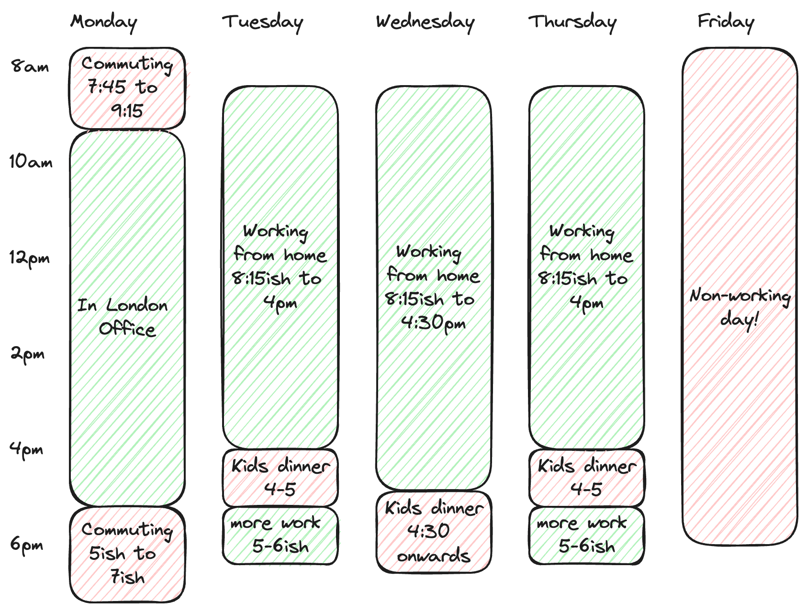

Core working times
I don't like too much presenteeism around work hours - we should work when we are most productive, and not force ourselves to particular hours when we are not.
But - remote working means we need to have more explicit communication than before, so I am sharing my rough work schedule, so people can plan around me.
I will keep the team up to date on Slack where I have variations.
Working days
I work a 4 day week (80% contract) and I don't work Fridays - that's my parenting day!
However I'm usually checking Slack intermittently, no guarantees as kids come first, but ping me there and I will get back to you when I can.
I work from home (sunny Leighton Buzzard) but I attempt to be in the London office one day a week - usually Mondays unless there's some strong reason to change.
Daily hours
Mondays I have a 90 minute commute to London - I have some connectivity on the train but not much. I usually get to the office by 9:15, and try to leave by 5pm for the long trip home.
Tuesdays I work from around 8:15am until 4pm, then I'm unavailable from 4-5 to help with kid dinners.
After dinner I log back in for another 30 to 60 minutes more work, depending on demand and energy levels.
Wednesdays I work from around 8:15am until around 4:30pm
Thursdays are the same as Tuesdays - I work from around 8:15am until 4pm, then I'm unavailable from 4-5 to help with kid dinners.
After dinner I log back in for another 30 to 60 minutes more work, depending on demand and energy levels.
Fridays I don't work! Well, I work, but at parenting not tech :)